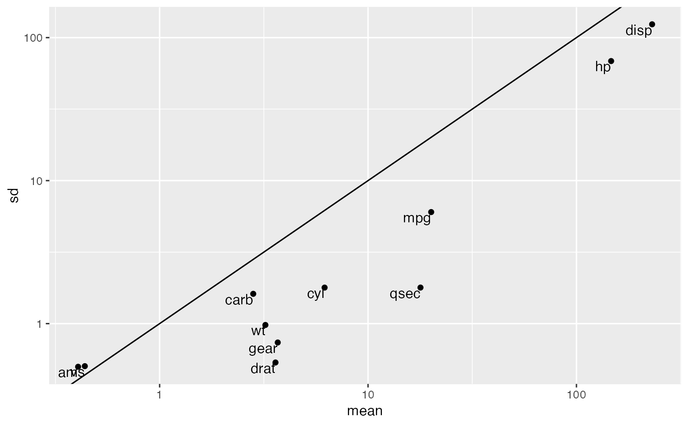

Data frame tidiers are deprecated and will be removed from an upcoming release of broom.
# S3 method for data.frame tidy(x, ..., na.rm = TRUE, trim = 0.1) # S3 method for data.frame augment(x, data, ...) # S3 method for data.frame glance(x, ...)
| x | A data.frame |
|---|---|
| ... | Additional arguments for other methods. |
| na.rm | a logical value indicating whether |
| trim | the fraction (0 to 0.5) of observations to be trimmed from
each end of |
| data | data, not used |
Skew and Kurtosis functions are adapted from implementations in the moments package:
Lukasz Komsta and Frederick Novomestky (2015). moments: Moments, cumulants, skewness,
kurtosis and related tests. R package version 0.14.
https://CRAN.R-project.org/package=moments
tidy.data.frame produces a data frame with one
row per original column, containing summary statistics of each:
name of original column
Number of valid (non-NA) values
mean
standard deviation
median
trimmed mean, with trim defaulting to .1
median absolute deviation (from the median)
minimum value
maximum value
range
skew
kurtosis
standard error
number of rows
number of columns
number of rows that have no missing values
fraction of values across all rows and columns that are missing
These perform tidy summaries of data.frame objects. tidy produces
summary statistics about each column, while glance simply reports
the number of rows and columns. Note that augment.data.frame will
throw an error.
Other deprecated:
bootstrap(),
confint_tidy(),
finish_glance(),
fix_data_frame(),
summary_tidiers,
tidy.density(),
tidy.dist(),
tidy.ftable(),
tidy.numeric()
Other deprecated:
bootstrap(),
confint_tidy(),
finish_glance(),
fix_data_frame(),
summary_tidiers,
tidy.density(),
tidy.dist(),
tidy.ftable(),
tidy.numeric()
Other deprecated:
bootstrap(),
confint_tidy(),
finish_glance(),
fix_data_frame(),
summary_tidiers,
tidy.density(),
tidy.dist(),
tidy.ftable(),
tidy.numeric()
David Robinson, Benjamin Nutter
#> Warning: Data frame tidiers are deprecated and will be removed in an upcoming release of broom.#> Warning: `data_frame()` was deprecated in tibble 1.1.0. #> Please use `tibble()` instead.td#> # A tibble: 11 x 13 #> column n mean sd median trimmed mad min max range skew #> <chr> <dbl> <dbl> <dbl> <dbl> <dbl> <dbl> <dbl> <dbl> <dbl> <dbl> #> 1 mpg 32 20.1 6.03 19.2 19.7 3.65 10.4 33.9 23.5 0.640 #> 2 cyl 32 6.19 1.79 6 6.23 2 4 8 4 -0.183 #> 3 disp 32 231. 124. 196. 223. 94.8 71.1 472 401. 0.400 #> 4 hp 32 147. 68.6 123 141. 52 52 335 283 0.761 #> 5 drat 32 3.60 0.535 3.70 3.58 0.475 2.76 4.93 2.17 0.279 #> 6 wt 32 3.22 0.978 3.32 3.15 0.517 1.51 5.42 3.91 0.444 #> 7 qsec 32 17.8 1.79 17.7 17.8 0.955 14.5 22.9 8.40 0.387 #> 8 vs 32 0.438 0.504 0 0.423 0 0 1 1 0.252 #> 9 am 32 0.406 0.499 0 0.385 0 0 1 1 0.382 #> 10 gear 32 3.69 0.738 4 3.62 1 3 5 2 0.555 #> 11 carb 32 2.81 1.62 2 2.65 1 1 8 7 1.10 #> # … with 2 more variables: kurtosis <dbl>, se <dbl>#> Warning: Data frame tidiers are deprecated and will be removed in an upcoming release of broom.#> # A tibble: 1 x 4 #> nrow ncol complete.obs na.fraction #> <int> <int> <int> <dbl> #> 1 32 11 32 0library(ggplot2) # compare mean and standard deviation ggplot(td, aes(mean, sd)) + geom_point() + geom_text(aes(label = column), hjust = 1, vjust = 1) + scale_x_log10() + scale_y_log10() + geom_abline()